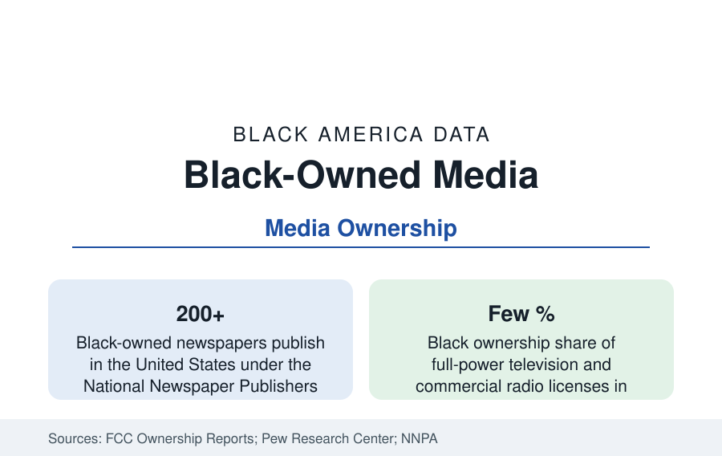

Black Business
Black-Owned Media: Newspapers, Broadcast, and the Digital Shift
Black-owned media — from the historic Black press to a few percent of broadcast licenses — reaches audiences the general market measures separately. The ownership data.

Black-owned media is the business sector that documents all the others — and its own data tell the industry's familiar story in miniature. The Black press, two centuries old, still publishes more than 200 newspapers; Black ownership of broadcast licenses runs at a few percent of television and radio in the Federal Communications Commission's counts; and the digital era has rebuilt Black media reach on platforms its owners do not control. This article reports the media ownership data.
The Black Press: The Historic Layer
The Black newspaper tradition begins in 1827 with Freedom's Journal in New York and runs through the Chicago Defender — the Great Migration's house organ, smuggled south by Pullman porters and credited by historians with moving a population — the Pittsburgh Courier, the Baltimore Afro-American, and a national network of weeklies that formed Black America's first information system. The National Newspaper Publishers Association counts more than 200 Black-owned papers publishing today, overwhelmingly local weeklies, with a combined readership the association measures in the tens of millions across print and digital editions. Their economics follow local news generally: classified and retail advertising long gone to the platforms, public-notice advertising and community institution support remaining, and digital transition uneven. The papers' archives constitute the documentary record of the communities in this reference's city profiles — in many neighborhoods, the only continuous record that exists.
Broadcast: The License Counts
The FCC's biennial ownership reports supply the broadcast figures. Black owners hold on the order of a few dozen full-power television stations — a low-single-digit percentage of the nation's roughly 1,400 — and a similarly small share of commercial radio, concentrated in the urban-format stations of the major metros. The largest Black-owned broadcasters operate at regional scale; the sector's landmark scale stories are historical (the first Black-owned television station in 1975; the rise and sale of the largest Black cable network, which passed out of Black ownership in the 2000s while its founder built a media fortune that remains the industry's largest Black personal outcome). Radio's data carry the local texture: Black-owned stations remain civic institutions in their metros — the morning shows that function as Black America's town square are substantially a radio phenomenon — even as ownership consolidates into national groups.
Magazines, Digital, and the Platform Era
The magazine era's giants — the Johnson Publishing empire of Ebony and Jet, for decades among the largest Black-owned companies of any kind — passed through sale and restructuring in the digital transition, their brands surviving under new ownership arrangements. What replaced the owned-empire model is the platform model: Black digital outlets and creator networks reaching audiences in the tens of millions through social and video platforms, with Black audiences' media consumption — measured by Nielsen at above-average hours across television and mobile — commanding advertising markets that the measurement industry tracks as a distinct segment (the buying-power data's media corollary). Ownership in this layer is thin at the platform level and real at the content level: production companies, podcast networks, and digital publishers owned by Black founders operate at meaningful scale on distribution they rent.
Advertising: The Revenue Data
The sector's economics turn on an advertising allocation the industry studies document: Black audiences constitute roughly 13 to 14 percent of the population and a comparable viewing share, while Black-owned media's share of national advertising expenditure has been measured in low single digits — the 'No Urban Dictates' history (the documented practice of advertisers instructing agencies to skip Black-format stations) and its modern algorithmic descendants are the trade literature's running subject. Industry initiatives to route a defined share of major advertisers' budgets to Black-owned media began publishing commitments and scorecards in the 2020s; the expenditure measurements are the series this reference watches.
Reading the Media Data
Media ownership is the business section's reflexive case: the sector that reports the data is itself data. Two hundred newspapers, a few dozen television stations, a digital reach vastly larger than its ownership — the gap between Black audience size and Black ownership share is the sector's defining statistic, and the reason its numbers are tracked here alongside the banks and the franchisors.
The FCC's ownership reports, published biennially, are this profile's update source.
More in Black Business
Black-Owned Businesses: Counts, Receipts, and the Representation Gap
About 161,000 Black-owned employer firms and three million solo ventures: how the Census Bureau counts Black business ownership, where firms concentrate, and the gap between population share and business share.
Black Median Net Worth: The Wealth Gap in Federal Reserve Data
The Federal Reserve puts Black median family net worth at $44,900, against $285,000 for White families — about 16 cents on the dollar. The widest gap in economic data.
Black Buying Power: The $1.8 Trillion Consumer Economy
Black buying power is estimated at about $1.8 trillion — larger than the economy of most nations. What the figure measures, who produces it, and what it buys.
Source: Federal Communications Commission ownership reports; Pew Research Center news media studies; National Newspaper Publishers Association.